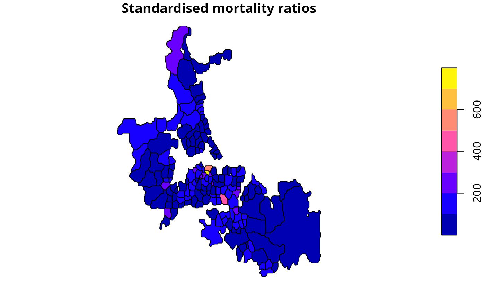

Probability mapping for rates
probmap.RdThe function returns a data frame of rates for counts in populations at risk with crude rates, expected counts of cases, relative risks, and Poisson probabilities.
probmap(n, x, row.names=NULL, alternative="less")Arguments
- n
a numeric vector of counts of cases
- x
a numeric vector of populations at risk
- row.names
row names passed through to output data frame
- alternative
default “less”, may be set to “greater”
Details
The function returns a data frame, from which rates may be mapped after class intervals have been chosen. The class intervals used in the examples are mostly taken from the referenced source.
Value
- raw
raw (crude) rates
- expCount
expected counts of cases assuming global rate
- relRisk
relative risks: ratio of observed and expected counts of cases multiplied by 100
- pmap
Poisson probability map values: probablility of getting a more ``extreme'' count than actually observed - one-tailed, default alternative observed “less” than expected
References
Bailey T, Gatrell A (1995) Interactive Spatial Data Analysis, Harlow: Longman, pp. 300--303.
Examples
auckland <- st_read(system.file("shapes/auckland.shp", package="spData")[1], quiet=TRUE)
res <- probmap(auckland$M77_85, 9*auckland$Und5_81)
rt <- sum(auckland$M77_85)/sum(9*auckland$Und5_81)
ppois_pmap <- numeric(length(auckland$Und5_81))
for (i in seq(along=ppois_pmap)) {
ppois_pmap[i] <- poisson.test(auckland$M77_85[i], r=rt,
T=(9*auckland$Und5_81[i]), alternative="less")$p.value
all.equal(ppois_pmap, res$pmap)
}
res$id <- 1:nrow(res)
auckland$id <- res$id <- 1:nrow(res)
auckland_res <- merge(auckland, res, by="id")
plot(auckland_res[, "raw"], main="Crude (raw) estimates")
plot(auckland_res[, "relRisk"], main="Standardised mortality ratios")

plot(auckland_res[, "pmap"], main="Poisson probabilities",
breaks=c(0, 0.05, 0.1, 0.5, 0.9, 0.95, 1))